O que eu reprovei antes de chegar a você (a regra é sua: defeito não se esconde): a 1ª tentativa da cena 6 fazia a virada do aparelho FORA da tela — refeita. O trecho final da cena 5 gerada criava um segundo telefone-fantasma — cortado fora (o filme termina no último quadro limpo). E o trecho antigo da cena 6 que seria reaproveitado também tinha um fantasma escondido no meio — então o gesto inteiro foi regenerado do zero. Nada foi apagado: tudo está guardado no arquivo.
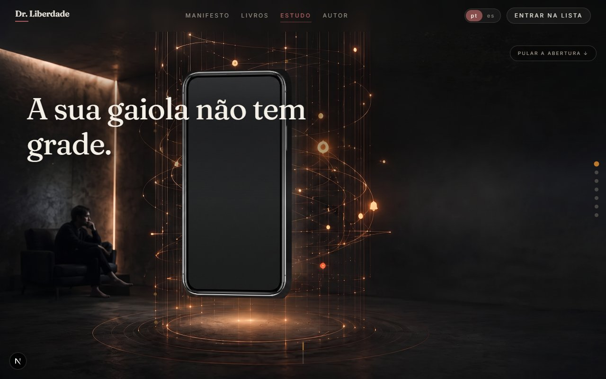
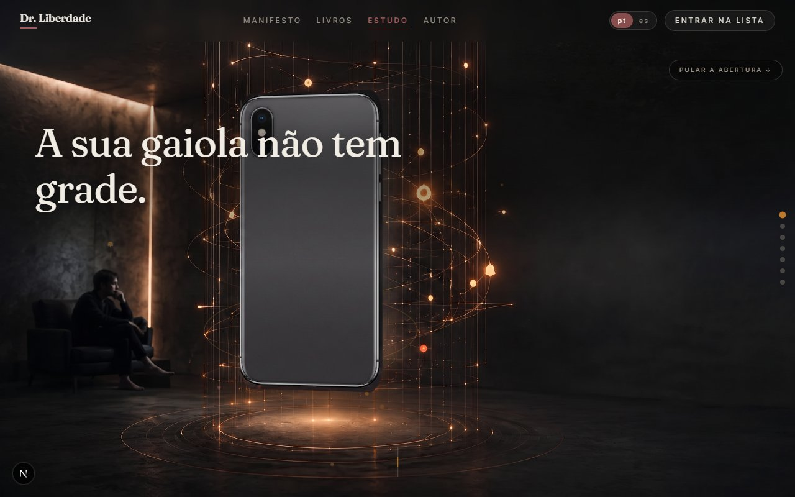
O telefone gira sozinho enquanto a página está parada: frente de vidro escuro, verso com as câmeras e SEM nenhuma marca.
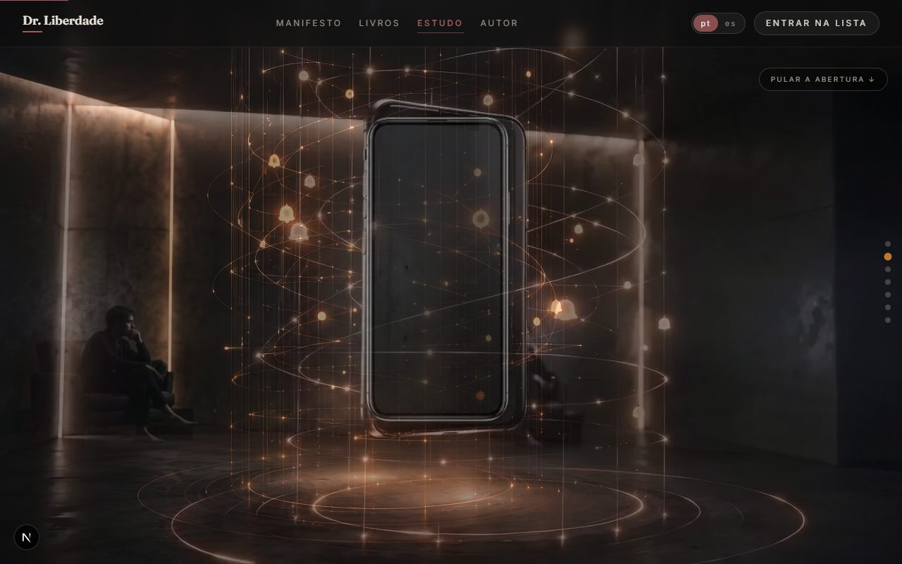
O meio exato da passagem: um aparelho só — o do giro chega à posição e ao tamanho do aparelho do vídeo antes de se dissolver nele.
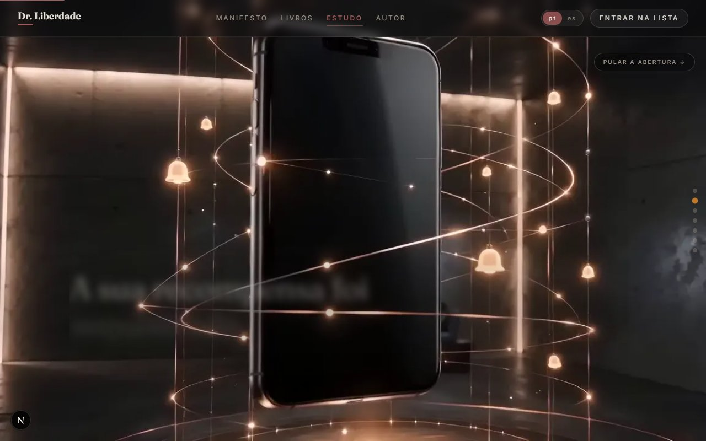
A câmera avança e o vidro toma o quadro — a porta de entrada para o mundo de dentro.
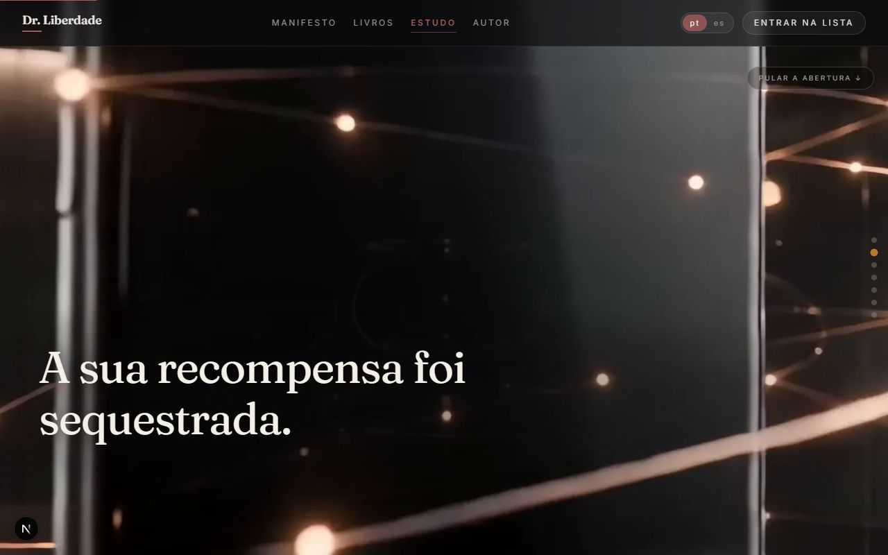
Dentro do espelho: arquitetura de estímulos, com a frase da cena no espaço vazio.
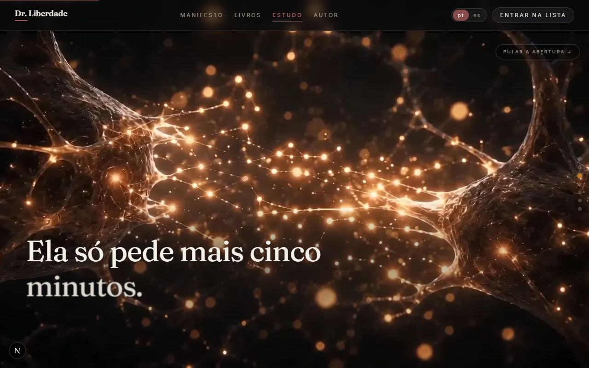
Os sinais percorrem os filamentos da SUA imagem, cruzam a fenda com brilho maior e acendem a conexão do outro lado — cresce até saturar, e rolar para trás desfaz.
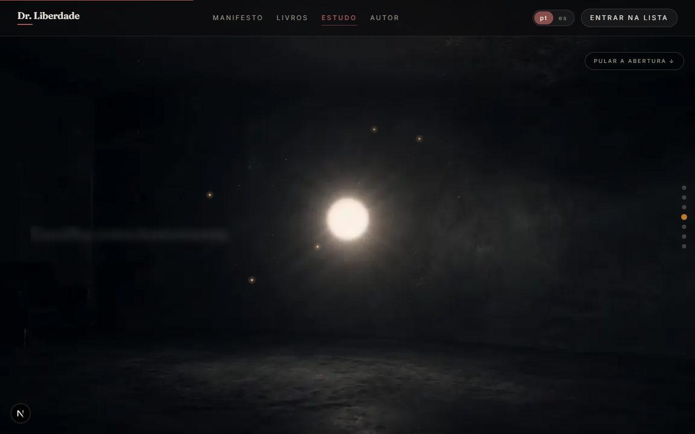
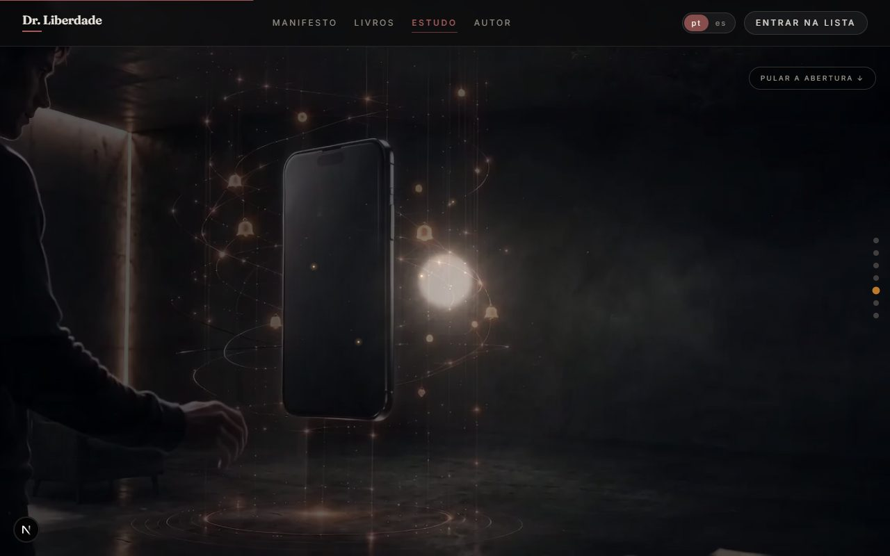
Os pontos desaceleram e viram brilhos de ambiente; o quarto reaparece por dentro da mesma luz — sem corte seco.
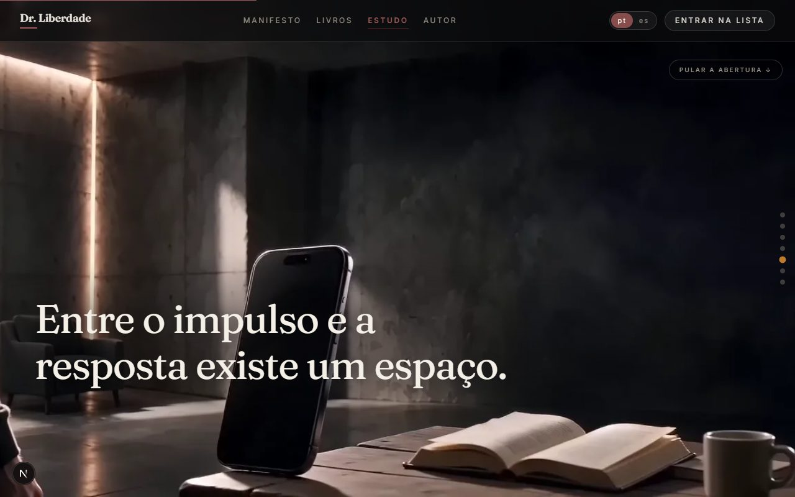
A câmera recua, o aparelho encolhe sem nunca sumir, a mesa volta ao quadro — a poltrona escura correta ao fundo.
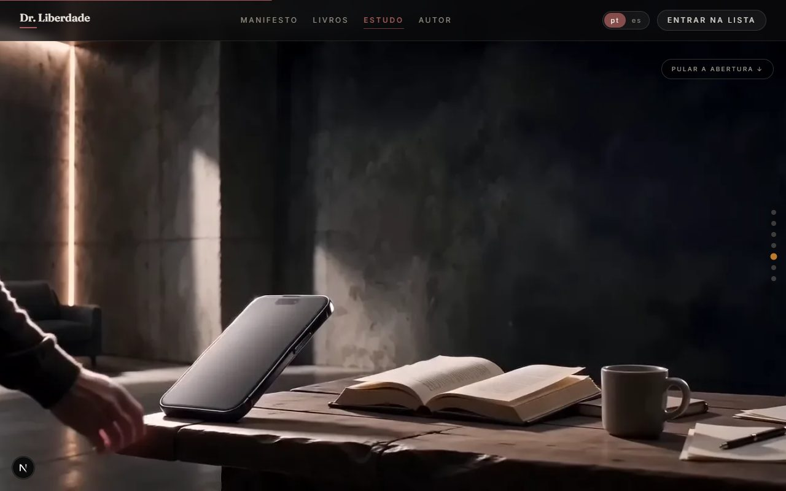
Fim da cena 5: o telefone em tamanho real junto à mesa, e a mão entra para alcançá-lo.
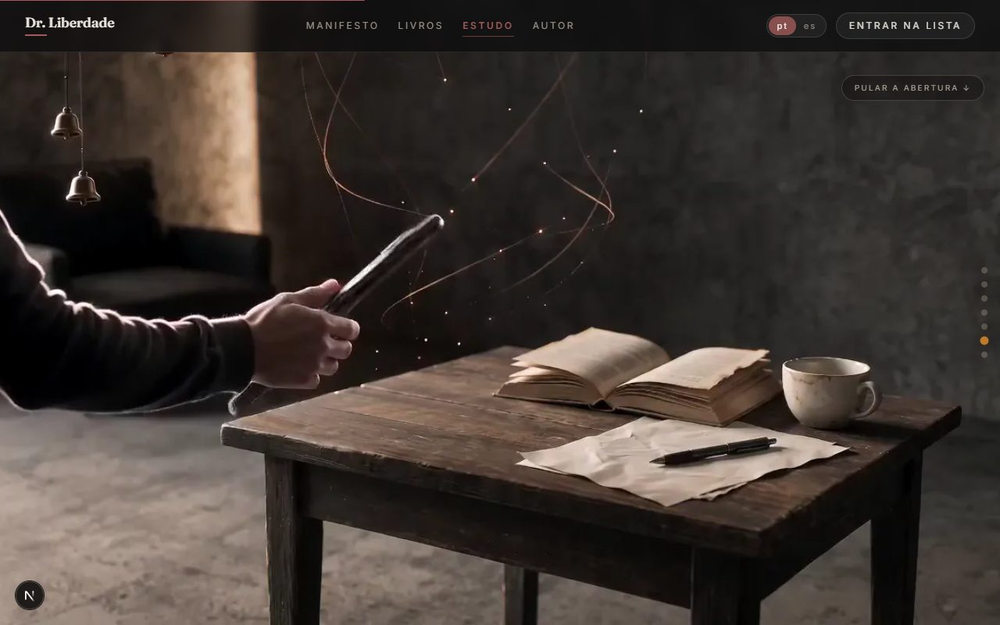
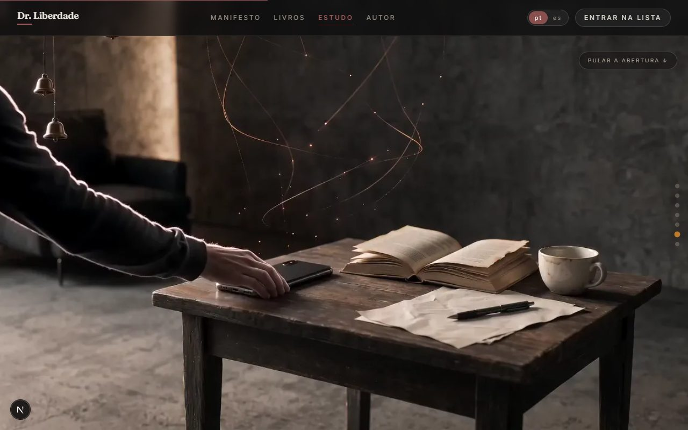
A virada acontece DIANTE da câmera (à esquerda, o aparelho de perfil no meio do gesto); à direita, o pouso: tela contra a madeira.
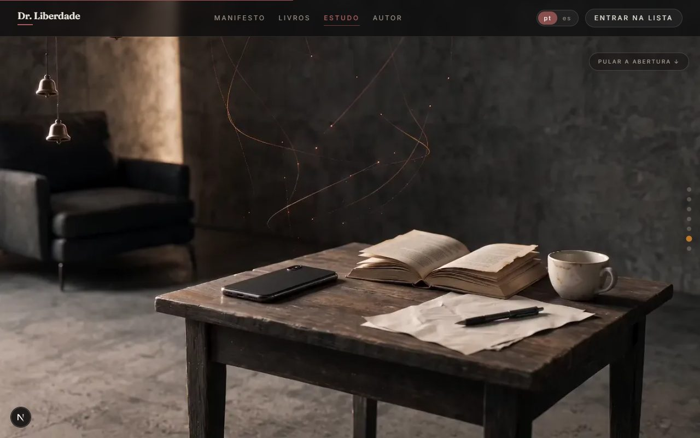
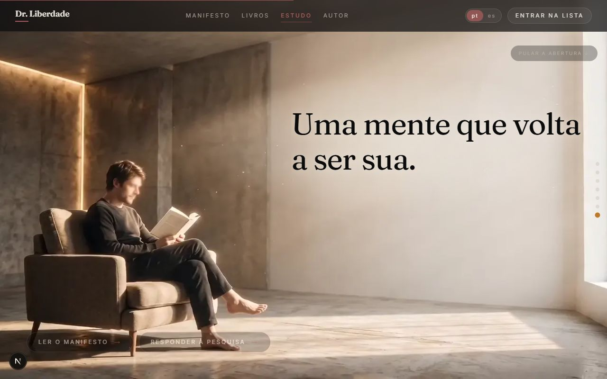
O aparelho de tela para baixo entre o livro e a caneta, verso com o módulo de câmeras igual ao do hero; depois a manhã, a leitura, a frase final e os botões.
Computador: a jornada completa avançando e RETORNANDO ao início.
Celular: mesma jornada, composição de tela vertical.
Esta rodada: ≈ US$ 2,44 (2 vídeos aprovados + 1 vídeo reprovado e refeito + 2 edições de imagem; os consertos de costura, emenda e poltrona final foram por código, custo zero). Projeto inteiro: ≈ US$ 16,30 dos US$ 20 que você liberou.
A ÚNICA DECISÃO AGORA: a abertura está aprovada assim para valer? Responda "pode" — ou aponte o quadro (1 a 10) e o ajuste que quiser.